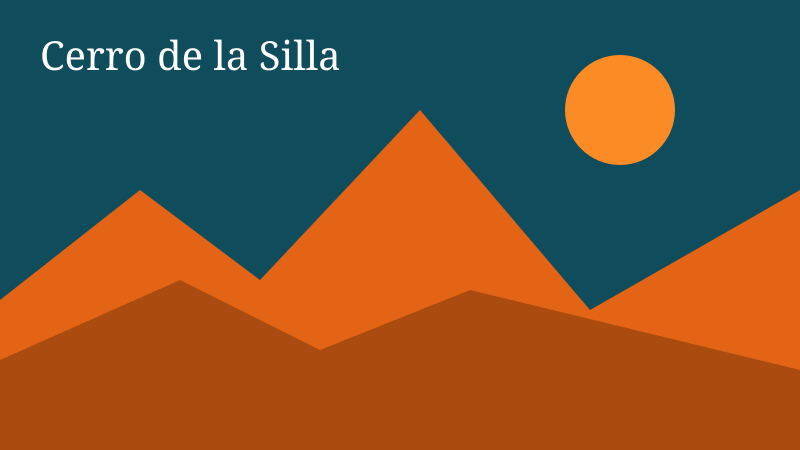
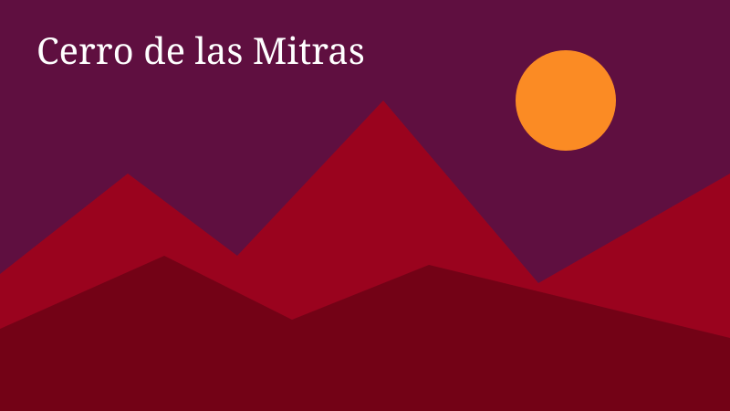
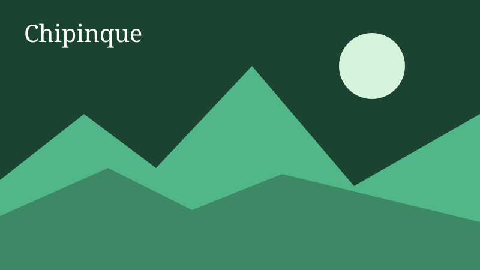

Las montañas de Monterrey

El Cerro de la Silla es el símbolo de la ciudad y se distingue por su forma de silla de montar.

El Cerro de las Mitras domina el poniente del área metropolitana y ofrece vistas amplias.

Chipinque es un parque natural donde se puede caminar, andar en bici y observar fauna local.
Lleva agua y protector solar si vas a subir.